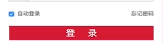

原文连接:https://www.cnblogs.com/dashucoding/p/10772108.html
php的会话控制，什么是会话控制，http等。
什么是会话控制思想，http协议。
cookie 和 session
http是超文本传输协议，是网络上最广泛的一种网络协议。
http最大特点是无连接无状态，clinet到http request到server，server到http response到clinet。
建立一个连接，连接完结束了。
cookie保存在客户端中，内存中的cookie，由浏览器维护，保存在内存中，浏览器关闭后就没了，保存在硬盘中的 cookie，有一个过期时间，除非手动清除和过期时间过了。
cookie使用场景
Cookie：达成服务器和浏览器之间长久连接的状态。
浏览器的cookie以小文件的形式保存在客户端中。
作用：长期登录，购物车。
设置cookie: bool
setcookie($name,$value,$expire,$path,$domain,$secure,$httponly);$expire:默认为0s。time()
认识COOKIE？
1.cookie是存储在客户端中的，至于怎么存储，存储的文件是什么这和服务器没有关系，和客户端有关系。
2.COOKIE过期了，也是客户端来判断要不要传递给服务器，如果过期了就删除对应的COOKIE文件。用户也可以手动的清理COOKIE，那么之前保存的COOKIE就全部不见了
3.COOKIE发送到服务器也是有条件的，不是什么时候都发送，要符合指定的域名，指定的路径等信息才会发送到对应的服务器上去。
4.COOKIE也是可以伪造的，所以检查服务器发送的COOKIE是否合法有效就很关键
<?php
// 内存cookie，浏览器关闭后cookie数据消失了
setcookie('username','dashu');
setcookie('age',12);
setcookie('email','dashucoding');
?>读取cookie，cookie数据保持在$_COOKIE，这是一个数组
<?php
var_dump($_COOKIE);
?>setrawcookie()不会进行urlencode()编码
setrawcookie-send a cookie without urlencoding the cookie value.更新cookie，删除cookie
通过header的方式操作cookie
<?php
通过header形式设置cookie
// header('Set-Cookie: a=1');
header('Set-Cookie: b=2;expires='.gmdate('D, d M Y H:i:s \G\M\T', time() + 3600));
header('Set-Cookie: b=2;expires='.gmdate('D, d M Y H:i:s \G\M\T', time() + 3600).'; domain=.php.org');
?>var Cookie={
set: function(key, val, expiresDays){
// 判断是否设置expiresDays
if(expiresDays) {
var date = new Date();
date.setTime(date.getTime() + expiresDays*24*3600*1000);// 格式化时间
var expiresStr = "expires=" + date.toGTMString() + ';';
}else{
var expiresStr = '';
}
document.cookie = key+"=" +escape(val)+";"+expiresStr;
},
get: function(key){
var getCookie=document.cookie.replace(/[ ]/g, ' ' );
var resArr = getCookie.split(';');
var res;
for(var i=0, len = resArr.length; i<len; i++){
var arr = resArr[i].split('=');
if(arr[0] == key){
res=arr[1];
break;
}
}
return unescape(res);
}
};Cookie实战之自动登陆

<?php
$username = $_POST['username'];
$password = md5($_POST['password']);
$autoLogin = $_POST['autoLogin'];
$link= mysqli_connect('localhost', 'root', '') or die('Connect Error');
mysqli_set_charset($link, 'utf8');
mysqli_setlect_db($link, 'test1') or die ('Database Open Error');
$sql="SELECT id,username,password FROM user WHERE username=' {$username}' && password='{$password}' ";
$sql = mysqli_escape_string($link,$sql);
$result = mysqli_query($link, $sql);
if(mysqli_num_rows($result) == 1){
if($autoLogin == 1){
$row = mysqli_fetch_assoc($resutl);
setcookie('username', $username, strtotime('+7 days'));
$salt = 'king';
$auth = md5($username.$password.$salt).":".$row['id'];
setcookie('auth',$auth,strtotime('+7 days'));
}else{
setcookie('username', $username);
}
exit("<script>alert('登录成功'); location.href = 'index.php'; </script>");
}else{
exit("<script>alert('登录失败'); location.href = 'login.php'; <script>");
}

mysqli_connect
mysqli_set_charset
mysqli_select_db
mysqli_escape_string
mysqli_query
mysqli_num_rows封装cookie
// cookie的设置，读取，更新，删除
<?php
class CustomCookie{
static private $_instance = null;
private $expire = 0;
private $path='';
private $domain='';
private $secure = false;
private $httponly = false;
// 构造函数完成cookie参数初始化
private function __construct(array $options = []) {
$this->setOptions($options);
}
// 设置相关选项
private function setOptions(array $options=[]){
if(iset($options['expire'])){
$this -> expire = (int) $options['expire'];
}
if(isset($options['path'])){
$this->path = $options['path'];
}
if(isset($options['domain'])){
$this->domain=$options['domain'];
}
if(isset($options['secure'])){
$this->secure=(bool)$options['secure'];
}
if(isset($options['httponly'])){
$this->httponly=(bool)$options['httponly'];
}
return $this;
}
// 单例模式
public static function getInstance(array $options = []) {
if(is_null(self::$_instance)){
$class= __CLASS__;
self::$_instance = new $class($options);
}
return self::$_instance;
}
// 设置cookie
public function set(string $name, $value, array $options=[]){
if(is_array($options)&&count($options)>0){
$this->setOptions($options);
}
if(is_array($value) || is_object($value)){
$value=json_encode($value,JSON_FORCE_OBJECT);
}
setcookie($name,$value,$this-expire,$this->path,$this->domain,$this->secure,$this->httponly);
}
// 得到指定cookie
public function get(string $name){
if(isset($_COOKIE[$name])){
return substr($_COOKIE[$name],0,1) == '{'?json_decode($_COOKIE[$name]):$_COOKIE[$name];
}else{
return null;
}
}
// 删除
pulic function delete(string $name, array $options=[]){
if(is_array($options) && count($options)>0){
$this->setOptions($options);
}
if(isset($_COOKIE[$name])){
setcookie($name,'',time()-1,$this->path,$this->domain,$this->secure,$this->httponly);
unset($_COOKIE[$name]);
}
}
// 删除所有
public function deleteAll(array $options=[]){
if(is_array($options) && count($options)>0){
$this->setOptions($options);
}
if(!empty($_COOKIE)){
foreach($_COOKIE as $name=>$value){
setcookie($name,'',time()-1,$this->path,$this->domain,$this->secure,$this->httponly);
unset($_COOKIE[$name]);
}
}
}
}
$cookie=CustomCookie::getInstance();
var_dump($cookie);
$cookie -> set('dashu',111);
$cookie -> set('dashucoding',111);
$cookie -> set('dada', 222, ['expire'=> time+3600]);
$cookie -> set('user', ['username' => 'dashu', 'age'=>12]);
var_dump($cookie->get['user']);
$cookie->delete('user');
$cookie->deleteAll();var Custom_localStorage={
set:function(key,value){
var item={
data:value
}
localStorage.setItem(key,JSON.stringify(item));
},
get:function(key){
var val=localStorage.getItem(key);
if(!val) return null;
val = JSON.parse(val);
return val;
}
};var Custom_localStorage={
//添加缓存时间
set:function(key,value,days){
var item={
data:value,
endTime:new Date().getTime()+days*24*3600*1000
};
localStorage.setItem(key,JSON.stringify(item));
},
get:function(key){
val val = localStorage.getItem(key);
if(!val) return null;
val=JSON.parse(val);
if(new Date().getTime()>val.endTime){
var = null;
localStorage.removeItem(key);
}
return val.data;
},
remove:function(key){
localStorage.removeItem(key);
return null;
},
removeAll: function(){
localStorage.clear();
return null;
}
};什么是session？
session会话控制，会话支持在php中是在并发访问时由一个方法来保存某些数据，从而使你能够构建更多的定制程序，从而提高你的web网站的吸引力。
一个访问者访问你的web网站将被分配一个唯一的id，就是所谓的会话id，这个id可以存储在用户端的一个cookie中，也可以通过url进行传递。
session对象存储特定用户会话所需的属性及配置信息。
session工作原理
服务器会把session_id发送到浏览器保存，一般浏览器会把这个id保存到cookie中
之后的每一次访问，都会携带cookie中存储的这个session_id
凭着session_id到服务器上领取自己的信息
// 开启会话
session_start()
$_SESSION来设置和读取全局变量
// 销毁
session_destroy()<?php
header('content-type:text/html;charset=utf-8');
// 开启会话
session_start();
// 设置数据
$_SESSION['username'] = 'dashu';
$_SESSION['email'] = '23@qq.com';
echo 'session名字', session_name(), session_id(), '<br/>';<?php
session_start();
$_SESSION['da'] = 'dashucoding';
setcookie(session_name(), session_id(), time()+3600);<?php
session_start();
$userList = [
'user1'=>[ 'id'=>1, 'username'=>'da1', 'email' => 'cc.com'],
'user2'=>[ 'id'=>1, 'username'=>'da1', 'email' => 'cc.com'],
];
$_SESSION = $userListsession_id的传递方式：
session.save_handler string
session.save_handler定义了来存储和获取与会话关联的数据的处理器的名字
session.save_path string
session.save_path定义了传递给存储处理器的参数
session.name string
session.name指定会话名以用做cookie的名字
session.auto_start boolean
session.auto_start 指定会话模块是否在请求开始时自动启动一个会话，默认为0
session.serialize_handler string
session.serialize_handler定义用来序列化/解序列化的处理器名字
当用户禁用掉cookie之后是否还可以用：
可以用，原理是传递session_id。
销毁session，将$_SESSION清空，$_SESSION=[];，将cookie中的数据清除，setcookie()；销毁会话session_destroy()。
session_destroy: destroys all data registered to a session
// 销毁会话
<?php
// 初始化会话
session_start();
// 重置会话中的所有变量
$_SESSION = array();
if(ini_get("session.use_cookies")){
$params = session_get_cookie_params();
setcookie(session_name(),'', time() - 42000,
$params["path"],$params["domain],
$params["secure"],$params["httponly"]
);
}
// 最后，销毁会话
session_destroy();
?>session登录应用
默认会话管理器是文件形式，一个用户对应一个文件，不总以应对千万访问级别。
使用mysql作为会话管理器，因为需要到数据库进行查询，会影响性能。
最佳方法：使用memcache或redis作为会话管理器。
php自定义session 调用方式
要在一个函数中访问一个全局变量，需要使用 global 关键字
<?php
$x=5;
$y=10;
function myTest()
{
global $x,$y;
$y=$x+$y;
}
myTest();
echo $y; // 输出 15
?><?php
$x=5;
$y=10;
function myTest()
{
$GLOBALS['y']=$GLOBALS['x']+$GLOBALS['y'];
}
myTest();
echo $y;
?>PHP static关键词
<?php
function myTest()
{
static $x=0;
echo $x;
$x++;
}
myTest();
myTest();
myTest();
?>每次调用，该变量将会保留着前一次被调用时的值。
两种基本的输出方法：echo、print
echo 命令输出字符串
print 命令输出字符串
PHP字符串
PHP整型
PHP浮点型
PHP 布尔型
PHP 对象
PHP NULL 值
<?php
$x = "Hello world!";
echo $x;
echo "<br>";
$x = 'Hello world!';
echo $x;
?>PHP 常量
define() 函数
bool define ( string $name , mixed $value [, bool $case_insensitive = false ] )结言
好了，欢迎在留言区留言，与大家分享你的经验和心得。
感谢你学习今天的内容，如果你觉得这篇文章对你有帮助的话，也欢迎把它分享给更多的朋友，感谢。
感谢！承蒙关照！您真诚的赞赏是我前进的最大动力！